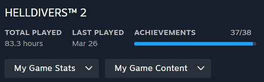
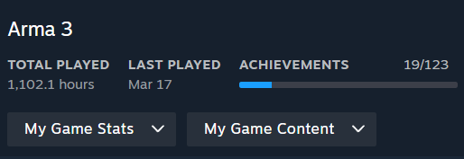
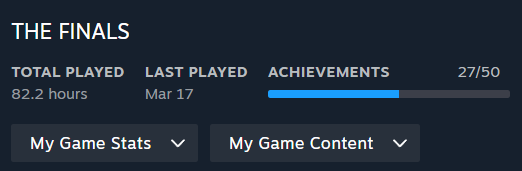

Introducing Dominik
Domink Vachon is a dedicated Computer Information Systems student at Mount Royal University with a passion for cybersecurity.
From a young age, their fascination with technology led them to build their first computer at the age of 12, sparking a lifelong interest in computer hardware and networking.
Alongside their academic pursuits, they have gained diverse work experience, ranging from furnishing for Stay Unique, an Airbnb operator, to General Labourer at Rohmec Industries,
a CNC machine shop. They also run a successful self-employed venture as a dog trainer.
Outside the digital realm, Dominik finds solace in nature, valuing it as an escape from the fast-paced world of technology.
They are an ardent advocate for the right-to-repair movement, believing in the importance of empowering individuals to repair and maintain their own technology.
With a blend of technical expertise, hands-on experience, and a commitment to advocacy, Dominik is poised to make significant contributions to the field of cybersecurity and technology.
Hobbies




I'm all about diving into the vast worlds of video games. Most of my free time is spent exploring MMOs, and my top pick has to be Guild Wars 2 - there's just something special about its immersive universe. But I'm not limited to just one genre; I also enjoy the rush of shooters like Helldivers 2, Rainbow Six Siege, and The Finals. When I'm not gaming, you'll find me outdoors, either with my loyal dog or surrounded by friends and family. Whether I'm wielding a controller or soaking up the sun, I believe in striking the perfect balance between digital adventures and real-world connections.